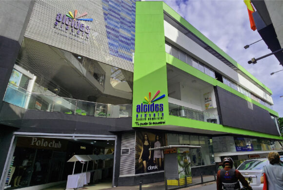

Salento
A 40 km de Pereira
Pueblo colorido conocido por su arquitectura colonial y el Valle del Cocora.
Salento
- Valle del Cocora - Palmas de cera más altas del mundo
- Calle Real - Arquitectura colonial y artesanías
- Miradores con vistas espectaculares
- Gastronomía típica del Quindío
Cómo llegar: Buses directos desde Terminal de Pereira